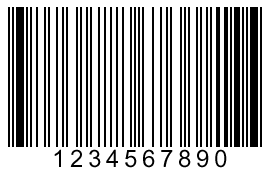

Learning to Program
with Ruby
Dessy Daskalov
@dess_e
Dessy Daskalov
@dess_e
Ruby is a programming language.
Wait ... what's a programming language?
Let's backtrack a bit.
There are two things you should know about your computer.
This is how your computer wishes you could speak to it:

A programming language is easy for you to learn, and your computer also understands it.
It's the half-way point between English and the language that your computer speaks.
Your computer can only do what you tell it to if you give it step-by-step instructions.
Imaging you have to teach a friend to make a peanut butter sandwich.
What would you tell your friend?
1. Toast two slices of bread
2. Spread peanut butter on one slice of bread
3. Spread jam on the other slice of bread
4. Put the two pieces of bread together
5. Put the sandwich on a plate and serve it
We left out some parts of the process, but a person could figure out:
Where to find the ingredients
To use a butter knife to spread the peanut butter
To put the bread in a toaster in order to toast it
etc, etc, etc (there are many little steps)
This same recipe for a computer would be much, much longer.
|
Let's try teaching Ruby Robot to make a peanut butter sandwich. |
 |
What is bread?
Where is it found?
How do I open the bag?
What is a slice?
How do I slice the bread?
How do I "toast"?
What is a toaster?
How do I use a toaster?
etc, etc, etc
What is peanut butter?
How do I "spread" peanut butter?
What is a butter knife?
Where is it found?
How do I open the knife drawer?
Which slice do I spread it on?
How much peanut butter do I spread?
etc, etc, etc
Programming is writing out step-by-step instructions to speak to your computer.
You can speak to your computer through Terminal.
From Terminal, we'll ask our computer for IRB.
IRB is like text messaging with Ruby Robot.
You'll ask Ruby Robot to do something, and it will respond.
irb
ruby-1.8.7 :001 >
Let's ask Ruby Robot to do something.
> 1 + 1
=> 2
> 462 * 86
=> 39732
Ruby can do math very quickly.
> 1 + 2 + 3
=> 6
> "Girls" + "Crack" + "The" + "Code"
=> "GirlsCrackTheCode"
Ruby Robot knows the difference between a number and a word.
Try using some of your own words, like your name.
Just like in our world, there are many objects in Ruby Robot's world.
Every object has a barcode. |
 |
Ruby Robot scans the barcode to find out what type of object it is.
Imagine Ruby Robot picks up the object "GirlsCrackTheCode".
Ruby Robot scans the barcode, and finds out that "GirlsCrackTheCode" is a word.
In Ruby Robot's world ...
Numbers are called INTEGERS. We just did some math with some integers.
Letters, words, and sentences are called STRINGS. A String always has quotes around it.
You've already met Objects. That's a programming word!
How does Ruby Robot know what to do with an Object?
Ruby Robot has to know what type of Object it is holding to know what to do with it.
Ruby Robot knows that ...
The number 1 is an Integer.
The word "coding" is a String.
Ruby Robot has a book full of instructions.
Each page tells Ruby Robot what to do with each type of Object.
When you ask Ruby Robot what 1 + 2 is:
It finds the instruction sheet for the class INTEGER.
Scans the instruction sheet for +.
Sees that when you ask for an INTEGER + INTEGER, you want it to add the two together.
> 99.next
=> 100
> 99.odd?
=> true
> 99.even?
=> false
Find your Integer sheet, and try playing with each of the instructions.
> "girlscrackthecode".capitalize
=> "Girlscrackthecode"
> "girlscrackthecode".upcase
=> "GIRLSCRACKTHECODE"
> "girlscrackthecode".reverse
=> "edocehtkcarcslrig"
Find your String sheet, and try playing with each of the instructions.
next, odd?, and even? are all methods that you can call on an Integer.
capitalize, upcase, and reverse are all methods that you can call on a String.
Methods are commands.
Each page in Ruby Robot's instruction book tells Ruby Robot what it can do with each type of Object.
The things it can do are the methods, and they're found on each page of the book.
What if we could type in "girlscrackthecode" only once? We can!
> gcc = "girlscrackthecode"
=> "girlscrackthecode"
gcc is called a variable. It's like a nickname for the Object.
You gave Ruby Robot the string "girlscrackthecode", and asked it to put a sticky note with "gcc" on that string.
Now, when you ask for "gcc", Ruby Robot will know where to find your string, because it has labelled it.
A variable is called just that because it can change.
> gcc = "learning to code with ruby robot"
=> "learning to code with ruby robot"
Now let's ask for gcc.
> gcc
=> "learning to code with ruby robot"
Let's try some more
> gcc = 99
=> 99
Let's ask for gcc once again.
> gcc
=> 99
Let's introduce another variable.
> copy_cat = gcc
=> 99
> gcc
=> 99
> copy_cat
=> 99
Find your Variable sheet, and try playing with each of the instructions.
Now set gcc back to "girlscrackthecode"
> gcc = "girlscrackthecode"
=> "girlscrackthecode"
You can use this variable like you would have used "girlscrackthecode" before.
> gcc.capitalize
=> "Girlscrackthecode"
> gcc.upcase
=> "GIRLSCRACKTHECODE"
> gcc.reverse
=> "edocehtkcarcslrig"
Get creative, and try this with some of your own strings. Maybe your name, or favourite food or sport?
What happens if you use two methods, like gcc.upcase.reverse?
Integer
String
Object
Variable
> gcc.length
=> 17
You're probably starting to get a sense of how Twitter knows how many characters you've typed in.
> tweet = "I'm writing my first program with Ruby Robot at the
Intro to Ruby workshop!"
=> "I'm writing my first program with Ruby Robot at the
Intro to Ruby workshop!"
> tweet.length
=> 75
Try writing some tweets of your own, and check if they're too long!
Open TextMate, add the same code, and save it as twitter.rb in your ruby-girls folder. (Or, use assignments/twitter_1.rb)
tweet = "I'm writing my first program with Ruby Robot at the
Intro to Ruby workshop!"
tweet.length
To run your program, type quit to exit from IRB, and then type:
ruby twitter.rb
Wait, what? Why didn't it show me the length of my string?
IRB is like back-and-forth text messaging.
A program has to be told when to output something.
Change your program: (Or, use assignments/twitter_2.rb)
tweet = "I'm writing my first program with Ruby Robot at the
Intro to Ruby workshop!"
puts tweet.length
Open puzzle_1.rb in the puzzles folder, and write down the output you expect to see if you were to run this script.
If you're not sure of something, remember that you can type irb again and try it out.
The real Twitter...
Asks you to type something.
Tells you how many characters you're working with.
So far, we've just been putting our tweet directly into the program.
The puts method is used for output, and the gets method is used for input. Try this:
The gets method warns Ruby that you're about to speak.
> tweet = gets
I'm learning Ruby with Ruby Robot
=> "I'm learning Ruby with Ruby Robot\n"
Wait, we didn't type \n in our tweet. What is that?
The \n is there because you hit the enter button after you typed your tweet. To get rid of it, do this:
> tweet = gets.chomp
I'm learning Ruby with Ruby Robot
=> "I'm learning Ruby with Ruby Robot"
Let's try asking for input a few more times.
We'll run the program assignments/input_1.rb together.
Do you remember how to run a program?
ruby assignments/input_1.rb
Now let's run assignments/input_2.rb and assignments/input_3.rb together.
Mad Libs examples are from http://www.itsamadlibsworld.com/
Make a program called mad_lib.rb and create your very own Mad Lib.
Working with your buddy, change your Twitter program like this:
1. Ask (politely!) for a tweet from the user. - puts
2. Save the user input with a sticky note with "tweet" on it, without \n. - gets, chomp
3. Output the tweet the user gave. - puts
4. Output the number of characters in the tweet. - puts, chomp
5. Output how many more characters the user can add until they hit 140 characters. - puts
(answers in assignments/twitter_3.rb)
Twitter...
Lets you send your tweet if it is 140 characters or less.
Tells you that your tweet is too long if it is greater than 140 characters.
So far we know how to print the length of the user's tweet.
We don't know how to tell them whether they can or cannot send their tweet, depending on its length.
Programming is writing out sets of simple instructions for the computer to follow.
Let's break down out tweet logic into simple instructions.
We want our program to ...
if the tweet is greater than 140 characters, tell the user that they cannot send their tweet
if the tweet is less than 140 characters, tell the user that they can send their tweet
The math symbol for greater than is:
>
Try the code below in IRB:
> tweet = "I'm writing my first program with Ruby Robot at the
Intro to Ruby workshop!"
=> "I'm writing my first program with Ruby Robot at the
Intro to Ruby workshop!"
> tweet.length > 140
=> false
> tweet.length > 10
=> true
The math symbol for less than is:
<
Try the code below in IRB:
> tweet = "I'm writing my first program with Ruby Robot at the
Intro to Ruby workshop!"
=> "I'm writing my first program with Ruby Robot at the
Intro to Ruby workshop!"
> tweet.length < 140
=> true
> tweet.length < 10
=> false
Let's simplify our if statements.
Remember that we're storing the user's tweet in the variable tweet.
Original if statements:
if the tweet is greater than 140 characters, tell the user that they cannot send their tweet
if the tweet is less than 140 characters, tell the user that they can send their tweet
if tweet.length > 140 puts "Your tweet is too long!"
if tweet.length < 140 puts "Tweet your heart out!"
Replace the puts statements in your Twitter program with the code below. (see assignments/twitter_4.rb if needed)
if tweet.length > 140
puts "Your tweet is too long!"
end
if tweet.length < 140
puts "Tweet your heart out!"
end
Try your new program with this tweet:
You have brains in your head. You have feet in your shoes. You can steer yourself, any direction you choose.
Try your new program with this tweet:
You'll get mixed up, of course, as you already know. You'll get mixed up with many strange birds as you go. So be sure when you step. Step with care and great tact and remember that Life's a Great Balancing Act. Just never forget to be dexterous and deft. And never mix up your right foot with your left.
Try your new program with this tweet:
My alphabet starts with this letter called yuzz. It's the letter I use to spell yuzz-a-ma-tuzz.
Try your new program with this tweet:
Oh the places you'll go! There is fun to be done! The magical things you can do with that ball, will make you the winning-est winner of all.
What if your tweet is exactly 140 characters?
Our program skips this possibility.
The symbol for equality is:
==
> tweet = "Oh the places you'll go! There is fun to be done!
The magical things you can do with that ball, will make you the
winning-est winner of all."
=> "Oh the places you'll go! There is fun to be done!
The magical things you can do with that ball, will make you the
winning-est winner of all."
> tweet.length
=> 140
> tweet.length == 140
=> true
Add this last if statement to the bottom of your file: (Or, use assignments/twitter_5.rb)
if tweet.length == 140
puts "Tweet your heart out!"
end
The == operator checks that the value of the objects on either side of it are equal.
Now try running your program with the tweet:
Oh the places you'll go! There is fun to be done! The magical things you can do with that ball, will make you the winning-est winner of all.
Find your Logic sheet, and try playing with each of the instructions.
| Operator | True | False |
| == | 99 == 99 | 99 == 100 |
| != | 99 != 100 | 99 != 99 |
| > | 100 > 99 | 99 > 100 |
| < | 99 < 100 | 100 < 99 |
| >= | 99 >= 99 | 99 >= 100 |
| <= | 99 <= 99 | 100 <= 99 |